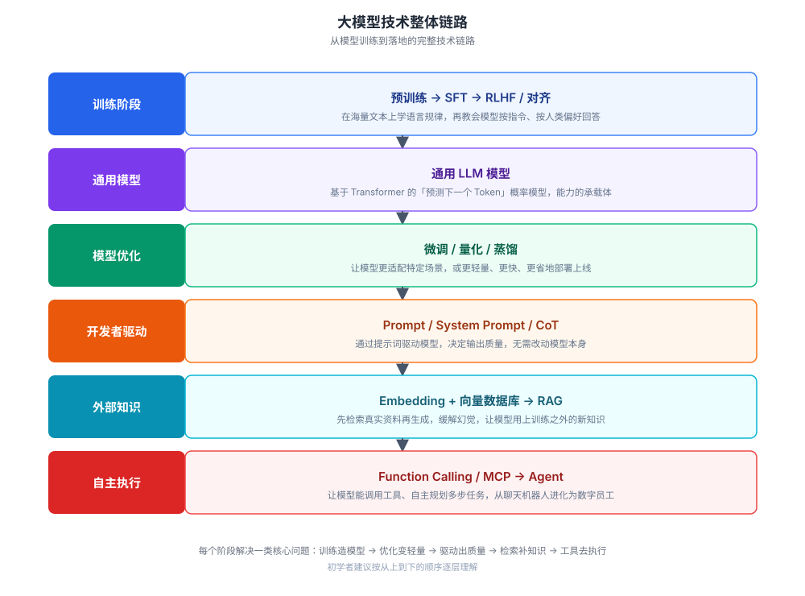
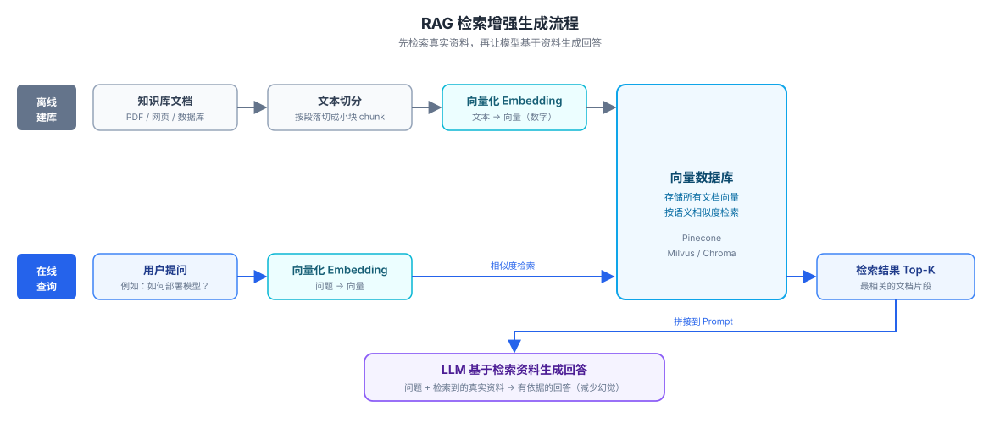

Large Model Related Concepts
When you first start developing with large models (LLMs), a flood of new terms comes at you: Token, RAG, Embedding, Agent... They may seem independent, but they are actually connected into a complete technical pipeline.
This article connects these concepts in the order of "What is a model → How to train → How to use → How to optimize", helping beginner developers build a clear knowledge framework.
This article is not just a glossary; it also uses real, runnable Python code to demonstrate how these concepts are applied.
All examples are based on the OpenAI-compatible protocol. You can switch to providers like Alibaba Cloud Bailian, DeepSeek, etc., by simply changing the API endpoint and key.
Python OpenAI Reference:https://www.runoob.com/python3/python-openai.html
Overall Technical Pipeline
Before breaking down each concept, let's take a look at the complete pipeline of large model technology to build an overall understanding.
From top to bottom, each layer solves a core problem: training creates the model, optimization makes it lighter, inference makes it produce results, retrieval supplies knowledge, and tools enable execution.

The following sections expand layer by layer from top to bottom along this pipeline.
Basic Concepts: What Is a Model
This section answers the most fundamental question: what exactly is a large model, and how does it work?
LLM (Large Language Model)
LLM stands for Large Language Model, a deep learning model trained on massive amounts of text.
Its essence is a probabilistic model that "predicts the next word": given the preceding text, it predicts the most likely content that follows.
Products like ChatGPT, Claude, Tongyi Qianwen, etc., are all powered by LLMs at their core.
Transformer and Attention Mechanism
Almost all modern LLMs are based on the Transformer architecture.
Its core innovation isthe attention mechanism (Attention / Self-Attention): when processing a word, the model can dynamically "attend to" other relevant words in the input sequence, thereby better understanding contextual relationships.
For example, when the model reads a sentence, it doesn't scan rigidly word by word; instead, it automatically determines "which previous word is most related to this word".
Token
Models do not process text by "character" or "word"; instead, they process it by tokens.
A token may be a Chinese character, an English word, or part of a word.
Understanding tokens has two direct practical implications:
The model's context length limit is calculated in tokens; API call billing is also calculated in tokens.
Using OpenAI's open-source tokenization library tiktoken, you can directly see how many tokens a piece of text is split into:
Example
import tiktoken
# Different models use different tokenizers; encoding_for_model automatically selects the corresponding one
enc = tiktoken.encoding_for_model("gpt-4o-mini")
tokens = enc.encode("Hello world") # Split the text into a token list
print("Token count:", len(tokens))
print("Split result:", [enc.decode([t]) for t in tokens])
Output:
Token 数量：2 切分结果：['Hello', ' world']
When switching to Chinese or longer words, the tokenization method will be completely different, so "estimating tokens by character count" is not accurate.
Context Window
Refers to the maximum number of tokens the model can "see" and process at one time.
For example, a context window of 100K means that a single conversation (historical messages, your question, and the model's answer combined) cannot exceed 100,000 tokens.
The larger the window, the more content the model can "remember", and the longer the documents it can process at once.
Parameter Count (Parameters)
Parameter count refers to the number of learnable weights inside the model, usually measured in B (billion), such as 7B, 70B.
It reflects the model's scale and capability ceiling to some extent, but it is not the only metric—training data quality and architecture design are equally important.
| Common parameter sizes | Scale | Typical positioning |
|---|---|---|
| 1B ~ 7B | Small to medium | Can run locally on consumer-grade GPUs, suitable for lightweight tasks |
| 8B ~ 34B | 中 | High cost-performance, covers most general scenarios |
| 70B ~ hundreds of B | 大 | Strongest capability, usually accessed via cloud APIs |
How Models Are Trained
An LLM that can converse naturally usually goes through multiple training stages, building capabilities layer by layer.

Pre-training
The model learns statistical patterns of language from massive amounts of unlabeled text (web pages, books, code, etc.), such as grammar, common sense, and logical relationships.
This stage consumes the most computational power and is the foundation of the model's capabilities.
However, at this point the model is not yet good at "doing things as instructed"; it is more like someone who has read extensively but doesn't know how to communicate.
SFT (Supervised Fine-Tuning)
SFT stands for Supervised Fine-Tuning.
Using human-annotated "question-answer" pair data, the model is taught to answer questions according to human instructions, rather than continuing text on its own.
RLHF (Reinforcement Learning from Human Feedback)
RLHF stands for Reinforcement Learning from Human Feedback.
Humans score or rank multiple candidate answers from the model, and these feedbacks are then used to train the model, making its outputs better align with human preferences (more helpful, more honest, and safer).
A similar technique is RLAIF: using AI instead of humans to score, reducing annotation costs.
Both share the same goal; the only difference is whether the "scorer" is a real human or another AI.
Alignment
Alignment is a broader concept: making the model's behavior and values conform to human expectations and intentions.
It is a core topic in the field of AI safety, running through various training stages such as SFT and RLHF—essentially, SFT and RLHF are both "alignment methods."
Fine-tuning
On the basis of an already-trained general model, continue training with data from a specific domain (such as law, healthcare, customer service).
Compared to pre-training from scratch, fine-tuning costs much less, and it is a common practice to adapt general models to specialized scenarios.
MoE (Mixture of Experts)
MoE stands for Mixture of Experts, a model architecture design.
The model contains multiple "expert" subnetworks; each time it processes input, only a portion is activated, rather than all parameters participating in computation.
This makes it possible to expand the overall scale of the model while controlling the actual computation, achieving "large parameters, fast inference."
| Training stages | English | Primary function | Data relied upon |
|---|---|---|---|
| Pre-training | Pre-training | Learn language patterns and build foundational capabilities | Massive amounts of unlabeled text |
| Supervised fine-tuning | SFT | Learn to answer questions according to instructions | Human-annotated question-answer pairs |
| Reinforcement learning from human feedback | RLHF | Outputs better aligned with human preferences | Human scoring/ranking of responses |
| Alignment | Alignment | Make the model helpful, honest, and safe | Spans all the above stages |
How Developers Use Large Models
This is the part beginner developers need to focus on most: how to make large models serve applications via API.
This section first provides a basic, runnable dialogue invocation example, then expands on each concept.
Basic API Chat Call
The following code demonstrates a complete dialogue request, using three concepts: System Prompt, user messages, and temperature.
Example
from openai import OpenAI
import os
# Create a client. Any service using an OpenAI-compatible protocol can reuse this code,
# To switch to another provider, just change api_key and base_url
client = OpenAI(
api_key=os.getenv("OPENAI_API_KEY"), # Read the API key from environment variable (required)
)
# Make a dialogue request
response = client.chat.completions.create(
model="gpt-4o-mini", # Model name (required), change according to the provider
messages=[
# System Prompt: Preset the model's role and behavioral guidelines
{"role": "system", "content": "You are a professional Python programming assistant and only answer technical questions."},
# User message: the actual question
{"role": "user", "content": "What is runoob?"},
],
temperature=0.7, # Temperature for generation, range 0~2, higher is more divergent (see below)
)
# Print the model's response
print("Response:", response.choices[0].message.content)
# The usage field records the number of Tokens consumed by this call (basis for billing)
print("Input Token count:", response.usage.prompt_tokens)
print("Output Token count:", response.usage.completion_tokens)
Output:
回答：runoob（菜鸟教程）是一个提供编程教程的中文学习网站…… 输入 Token 数：33 输出 Token 数：18
The usage field in the returned structure is the concrete implementation of the Token concept mentioned above: it tells you how many Tokens this call consumed and is also the basis for billing.
Prompt
The Prompt is the instruction or question you give to the model, which directly determines the quality of the model's output.
The technique of studying how to write clearer and more effective Prompts is calledPrompt Engineering。
Common techniques include: providing concrete examples, requiring step-by-step reasoning, specifying output format, etc.
System Prompt
Instructions preset to the model before the user's formal input, used to define the model's role, behavioral guidelines, and background knowledge.
The phrase "You are a professional Python programming assistant and only answer technical questions" in the earlier example is a typical System Prompt.
Difference between System Prompt and user messages: The System Prompt sets "how the model should behave," while user messages specify "what to do specifically."
Putting general rules into the System Prompt keeps the response style consistent across multi-turn conversations.
Temperature
Temperature is a parameter that controls the randomness of the model's output, typically ranging from 0 to 2.
The higher the temperature, the more "creative" and random the responses, and the more prone to errors; the lower the temperature, the more conservative and stable the responses.
| Value range | Output characteristics | Applicable scenarios |
|---|---|---|
| Near 0 | Almost deterministic, stable and reproducible | Code writing, data extraction, factual Q&A |
| 0.3 ~ 0.7 | Some variation but controllable | General dialogue, translation, summarization |
| 0.8 ~ 1.2 | Creative, diverse | Brainstorming, copywriting, story creation |
| Greater than 1.2 | Highly random, prone to going off track | Use with caution, only for special creative scenarios |
In-Context Learning
There is no need to fine-tune the model at all; just provide a few examples in the Prompt, and the model can imitate them to complete new similar tasks.
This is one of the most commonly used techniques in Prompt Engineering, also called Few-shot Learning.
Chain-of-Thought (CoT)
Guide the model to break complex problems into a step-by-step reasoning process before giving the final answer, rather than jumping directly to a conclusion.
Practice has shown that this approach significantly improves the model's accuracy on complex tasks such as mathematics and logical reasoning.
The simplest way is to add "Please think step by step" to the prompt.
Hallucination
Hallucination refers to content that the model generates that seems plausible and fluent but is actually wrong or fabricated.
This is a common flaw in LLMs, because the model is essentially "continuing the most likely text" rather than "verifying facts."
One of the core methods to mitigate hallucination is RAG, described below: first retrieve real information, then let the model answer based on that information.
Connecting the Model to the External World
A plain LLM can only rely on knowledge learned during training to answer questions; it neither knows the latest information nor can it proactively take actions.
The techniques in this section are the key to solving these two shortcomings.
Embedding
Embedding converts text, images, and other content into a sequence of numbers (vectors).
After conversion, the computer can determine whether two pieces of content are similar in "semantics" by calculating the distance between vectors.
This is the underlying foundation for applications such as search, recommendation, and RAG.
Vector Database
A vector database is specifically used to store and retrieve embedding vectors, such as Pinecone, Milvus, and Chroma.
It can quickly find content most similar to the query's semantics among massive vectors, and is an essential component for building RAG systems.
RAG (Retrieval-Augmented Generation)
RAG stands for Retrieval-Augmented Generation.
Its workflow is: first convert the external knowledge base into vectors and store them in a vector database; when the user asks a question, retrieve the most relevant content; then pass the retrieved results along with the question to the model to generate an answer.
RAG can effectively reduce hallucination and allow the model to answer new knowledge beyond the training data.

Below is a minimal RAG example that does not rely on an external vector database and uses OpenAI Embedding plus numpy, to make the principle easier to understand:
Example
from openai import OpenAI
import numpy as np
import os
client = OpenAI(api_key=os.getenv("OPENAI_API_KEY"))
# Simulate a very small "knowledge base": several documents
documents = [
"runoob is a Chinese learning website that provides programming tutorials.",
"RAG reduces hallucinations in large models by retrieving real information and then generating.",
"Python uses indentation to represent code blocks, and it is usually recommended to indent 4 spaces per level.",
]
# Step 1: Vectorize the knowledge base (build offline, only need to do it once)
doc_resp = client.embeddings.create(input=documents, model="text-embedding-3-small")
doc_vectors = [d.embedding for d in doc_resp.data]
# Step 2: Vectorize the user question
question = "What is runoob?"
query_vector = client.embeddings.create(
input=question, model="text-embedding-3-small"
).data[0].embedding
# Step 3: Use cosine similarity to find the most relevant document
def cosine(a, b):
a, b = np.array(a), np.array(b)
return float(a @ b / (np.linalg.norm(a) * np.linalg.norm(b)))
scores = [cosine(query_vector, v) for v in doc_vectors]
best_doc = documents[int(np.argmax(scores))] # The document with the highest similarity
print("Retrieved materials:", best_doc)
# Step 4: Feed the retrieved materials along with the question to the model to generate an answer
response = client.chat.completions.create(
model="gpt-4o-mini",
messages=[
{"role": "system", "content": "Please answer the question based only on the provided materials below; do not fabricate information not in the materials."},
{"role": "user", "content": f"Materials: {best_doc}\n\nQuestion: {question}"},
],
)
print("Answer:", response.choices[0].message.content)
Output:
检索到的资料：runoob 是一个提供编程教程的中文学习网站。 回答：runoob（菜鸟教程）是一个提供编程教程的中文学习网站。
In real projects, simply replace "computing similarity in memory" in Step 3 with "calling a vector database for retrieval," and the process is exactly the same.
Function Calling
Function Calling allows large models to call external tools or APIs to complete tasks, such as querying real-time weather, performing mathematical calculations, querying databases, and sending emails.
It compensates for the model's shortcoming of "only being able to generate text, not perform actions," and is a key step in evolving large models from chatbots into practical tools.
Its operation is a two-round interaction: in the first round, the model decides which function to call and what parameters to pass; after your code actually executes the function, the result is passed back in the second round, letting the model generate a natural language answer.
Example
import json
import os
client = OpenAI(api_key=os.getenv("OPENAI_API_KEY"))
# Define tools (functions) callable by the model
tools = [
{
"type": "function",
"function": {
"name": "get_weather",
"description": "Query real-time weather for the specified city",
"parameters": {
"type": "object",
"properties": {
"city": {"type": "string", "description": "City name, e.g., Hangzhou"}
},
"required": ["city"],
},
},
}
]
# Local function that actually executes the query (replace with real weather API in production)
def get_weather(city):
return f"{city} is sunny today, temperature 28°C"
# Round 1: Pass the question to the model, which decides which tool to call and what parameters to pass
response = client.chat.completions.create(
model="gpt-4o-mini",
messages=[{"role": "user", "content": "What's the weather like in Hangzhou today?"}],
tools=tools,
)
tool_call = response.choices[0].message.tool_calls[0]
args = json.loads(tool_call.function.arguments) # Parse out parameters, e.g., {"city": "Hangzhou"}
result = get_weather(args["city"]) # Actually execute the tool
print("Tool execution result:", result)
# Round 2: Send the tool result back to the model, letting it generate a natural language answer based on the result
follow_up = client.chat.completions.create(
model="gpt-4o-mini",
messages=[
{"role": "user", "content": "What's the weather like in Hangzhou today?"},
response.choices[0].message, # The model's "call tool" decision from the previous step
{"role": "tool", "tool_call_id": tool_call.id, "content": result}, # The result returned by the tool
],
tools=tools,
)
print("Final answer:", follow_up.choices[0].message.content)
Output result:
工具执行结果：杭州 今天晴，气温 28°C 最终回答：杭州今天是晴天，气温大约 28°C，适合外出活动。
MCP (Model Context Protocol)
MCP stands for Model Context Protocol, an open protocol that allows large models to connect to external tools and data sources in a standardized way.
It can be compared to a "USB port for AI": as long as different tools and data sources follow this protocol, they can be uniformly called by various large models that support MCP.
It solves the problem of "having to integrate every tool repeatedly" from the Function Calling era, reducing development effort.
Agent
An Agent is a system built on large models that can autonomously plan tasks, call tools, and execute multi-step operations.
Compared to a Q&A conversation, an Agent is more like a "digital employee" that can independently complete complex tasks, such as automatically running through the entire process of "research → code → test → fix bugs".
The core loop it relies on is ReAct (Reason + Act): think about the next step, call tools, observe results, and then think again, until the task is complete.

Multimodal
Multimodal refers to a model's ability to simultaneously understand and/or generate multiple types of data, not limited to text, but also including images, audio, and video.
Many mainstream large models now already have multimodal capabilities such as reading images and analyzing charts.
| Technology | Problem it solves | One-sentence understanding |
|---|---|---|
| Embedding | Let computers understand semantic similarity | Convert text into computable vectors |
| Vector database | Efficient storage and retrieval of vectors | Specialized repository for semantic search |
| RAG | The model doesn't know or may fabricate up-to-date knowledge | Look up information first, then answer |
| Function Calling | Models can only generate text and cannot perform actions | Let models call external tools |
| MCP | Every time you integrate a tool, you have to develop it again | Unified USB port for AI tools |
| Agent | Single-turn conversations cannot complete complex tasks | A digital employee that can autonomously plan multiple steps |
Making Models Run Faster and More Efficiently
The stronger the model, the larger it tends to be and the higher the running cost.
The following two concepts are aimed at making models lighter and more efficient in actual deployment.
Quantization
Quantization compresses model parameters from high precision (e.g., 32-bit floating point) to low precision (e.g., 8-bit or 4-bit integers).
It can significantly reduce the GPU memory occupied by the model and improve inference speed; the trade-off is some loss of precision, but that is acceptable in many scenarios.
Model Distillation
Distillation uses the output of a powerful but large "teacher model" to train a smaller "student model".
The goal is to let the small model learn the capabilities of the large model as much as possible. The distilled model is smaller, faster at inference, and cheaper to deploy.
| Comparison Item | Quantization | Distillation |
|---|---|---|
| What it does | Compress parameter precision (32-bit → 8/4-bit) | Use a large model to teach a small model |
| What changes | The numerical representation of the same model | Get a new small model |
| Main benefit | Saves GPU memory, increases speed | Small model is stronger and faster |
| Whether training is needed | Usually no retraining required | Requires training the student model |
| Typical scenario | Fit a large model into limited GPU memory | Deploy a small model in place of a large model |
Learning Path for Beginners
For beginner developers, there's no need to grasp all concepts at once.
It's recommended to follow the order below and progress step by step, which makes it easier to build a complete system than memorizing concepts in isolation.
| Stage | Concepts to Master | What You Can Do |
|---|---|---|
| Step 1 | LLM、Token、Prompt | Call the API to complete conversations |
| Step 2 | Embedding, vector databases, RAG | Connect external knowledge to the model |
| Step 3 | Function Calling、Agent | Let the model call tools and complete tasks autonomously |
| Step 4 | Fine-tuning, quantization, distillation | Production deployment and optimization |
There's no need to memorize definitions by rote — just run the code examples in this article yourself, and you'll gain a much deeper understanding.
Core Terminology Quick Reference
All key terms in the article are summarized into one table, grouped by "stage" for easy reference and review at any time.
| Term | English / Full Name | Stage | One-sentence Explanation |
|---|---|---|---|
| LLM | Large Language Model | Basic Concepts | A deep learning model trained on massive amounts of text; its essence is "predicting the next word" |
| Transformer | Transformer | Basic Concepts | The underlying network architecture shared by almost all modern LLMs |
| Attention Mechanism | Attention / Self-Attention | Basic Concepts | Lets the model dynamically focus on relevant words in the input to understand contextual relationships |
| Token | Token | Basic Concepts | The smallest unit of text processed by the model; context length and API billing are both calculated based on it |
| Context Window | Context Window | Basic Concepts | The maximum number of Tokens the model can "see" and process at one time |
| Parameter Count | Parameters | Basic Concepts | The number of learnable weights inside the model, often measured in B (billions) |
| Pre-training | Pre-training | Training | Learning language patterns from massive unlabeled text, laying the foundation for capabilities |
| SFT | Supervised Fine-Tuning | Training | Teaching the model to answer questions per instructions using QA pair data |
| RLHF | Reinforcement Learning from Human Feedback | Training | Using human scoring to calibrate model outputs to better align with human preferences |
| RLAIF | Reinforcement Learning from AI Feedback | Training | Using AI instead of human scoring to reduce annotation costs |
| Alignment | Alignment | Training | Making model behavior conform to human intent, so it is helpful, honest, and safe |
| Fine-tuning | Fine-tuning | Training | Continuing training on a general-purpose model with domain data to adapt it to specialized scenarios |
| MoE | Mixture of Experts | Training | Multiple expert sub-networks are activated on demand; large parameter count but fast inference |
| Prompt | Prompt | Usage | The instruction or question entered into the model; directly determines output quality |
| Prompt Engineering | Prompt Engineering | Usage | The study of techniques for writing clearer, more effective Prompts |
| System Prompt | System Prompt | Usage | A pre-set instruction that defines the model's role and behavioral guidelines |
| Temperature | Temperature | Usage | A parameter controlling output randomness, ranging from 0 to 2; higher values produce more divergent output |
| In-context Learning | In-Context Learning | Usage | Give a few examples in the Prompt and the model follows suit; also known as Few-shot |
| Chain of Thought | Chain-of-Thought（CoT） | Usage | Guiding the model to reason step by step before answering, improving accuracy on complex tasks |
| Hallucination | Hallucination | Usage | The model generates fluent but incorrect or fabricated content |
| Embedding | Embedding | External World | Converting content into vectors to measure semantic similarity |
| Vector Database | Vector Database | External World | A database dedicated to storing and retrieving vectors, such as Milvus, Chroma |
| RAG | Retrieval-Augmented Generation | External World | Retrieving real information first and then generating, to mitigate hallucination and supplement new knowledge |
| Function Calling | Function Calling | External World | Enable the model to call external tools or APIs to perform actual actions |
| MCP | Model Context Protocol | External World | An open protocol for standardizing tool connections, AI's "USB interface" |
| Agent | Agent | External World | A system that can autonomously plan, call tools, and execute complex tasks in multiple steps |
| ReAct | Reason + Act | External World | The core loop of Agent: Think—Act—Observe—Re-think |
| Multimodal | Multimodal | External World | Simultaneously understand and/or generate multiple types of data such as text, images, and audio |
| Quantization | Quantization | Optimization | Compress parameter precision (32-bit → 8/4-bit), saving VRAM and increasing speed |
| Model Distillation | Model Distillation | Optimization | Use a large model to teach a small model, resulting in a smaller and faster deployment model |
Click to Share Notes
<p style="font-size:14px;">The note must be an extension of the content of this article!</p><br> <p style="font-size:12px;"><a href="../tougao.html" target="_blank">For article submission, click here</a></p> <p style="font-size:14px;"><a href="../w3cnote/runoob-user-test-intro.html" target="_blank">How to get a registration invite code</a></p> <h3 class="text-muted"><i class="fa fa-info-circle" aria-hidden="true"></i> You must <a href=";.html" class="runoob-pop">log in</a> before sharing a note!</h3> <p><a href="../w3cnote/runoob-user-test-intro.html" target="_blank">How to get a registration invite code</a></p>